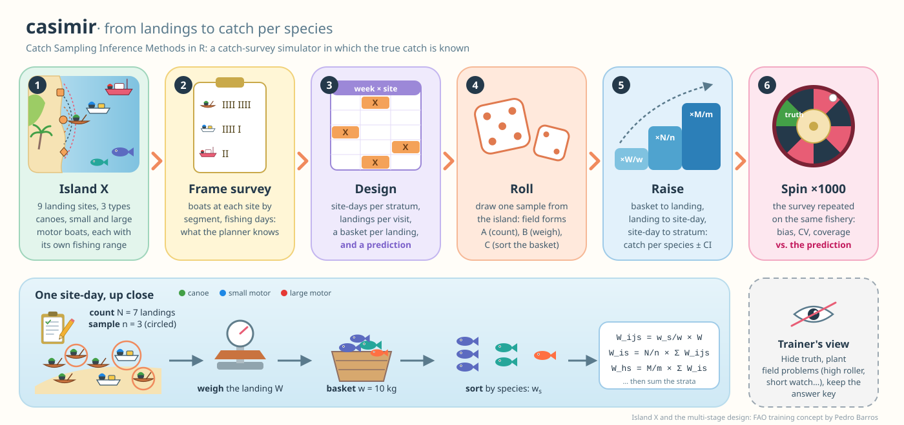

Catch Sampling Inference Methods in R
Guide and documentation: https://henning-winker.github.io/casimir/ (Concept and layers · How it works · User guide · Teaching cards · Functions)
casimir is a catch estimator simulator for training in landing-site surveys (catch assessment surveys). It simulates a small-scale fishery whose true landings are known, and lets trainees design a stratified multi-stage survey, roll a sample, raise it to catch per species with the estimators of the FAO training, and spin the design many times to see its bias, precision and cost. It is made for trainees (estimate a catch whose truth is known) and for trainers (plant field problems, keep the answer key).
The fishery comes from the logbook simulator of cpueTargeting with its landing-site layer: landing sites, segments with fishing ranges, and a calendar. The teaching style follows FLOSS.

Concept
1 ISLAND -> 2 FRAME -> 3 DESIGN -> 4 ROLL -> 5 RAISE -> 6 SPIN x1000
sites, segments, boats by site, site-days (PSUs), field forms landing, site-day, bias, CV,
ranges; the true fishing days landings, subsample; A, B, C stratum, total; coverage, cost
landings betting slip (+ artefacts) intervals- Island X. Nine landing sites of three types (Harbour, Beach, Jetty) and three segments (canoe, small motor, large motor) with different ranges, home tactics and sites, from the training deck.
- Design. Strata are site type x quarter (segments within each visit); the PSU is a site-day; landings per segment; species subsamples in baskets.
-
Estimators.
W_ijs = w_ijs / w_ij * W_ij,W_is = N_i / n_i * sum W_ijs,W_hs = M_h / m_h * sum W_is, with the ultimate-cluster variance, and the CPUE x effort route. Unbiased over replicates; a census recovers the truth. - Planted artefacts. High roller, short watch, easy sites, dropped zeros, top of the box, old frame.
- Engine first. Everything runs from R scripts; the Shiny app only collects inputs and calls the same functions.
Installation
# install.packages("remotes")
remotes::install_github("Henning-Winker/cpueTargeting@landing-sites")
remotes::install_github("Henning-Winker/casimir")The app
install.packages(c("shiny", "shinydashboard", "commonmark"))
casimir::run_app()The app has the layout of the FLOSS app: numbered steps in the left panel, sub-tabs on each page, a Before you roll checklist with the Build island and Roll buttons, and the Hide truth switch.
| Step | Sub-tabs |
|---|---|
| Guide | Start here, Island and frame, Design and field forms, Raising, Spin, Warning flags, Cash out and truth, Settings explained |
| 1 Island | Fleet and ranges, Map, Landings |
| 2 Frame survey | Boats by site, Fishing days |
| 3 Design | Stages, Costs, Betting slip |
| 4 Roll | Visits (week x site grid), Form A, Form B, Form C, Artefacts (trainer) |
| 5 Raise | Step by step, Totals |
| 6 Spin x1000 | Spin, Results, Betting slip |
| 7 Cash out | survey files, with the answer key for trainers |
| True catch | Estimate vs truth, By stratum, Planted artefacts (only with Hide truth unticked) |
Quick start
library(casimir)
fish <- cas_fishery(island_x(), seed = 1) # the island and its true landings
d <- cas_design(m = 6, n = 3, w_kg = 10) # 6 site-days per site type and quarter
s <- draw_sample(fish, d, seed = 2) # field forms A-C
e <- estimate_catch(s) # catch per species with intervals
check_estimate(e, fish) # against the truth
ev <- replicate_design(fish, d, R = 200) # Spin: bias, CV, coverage
plot_eval(ev)